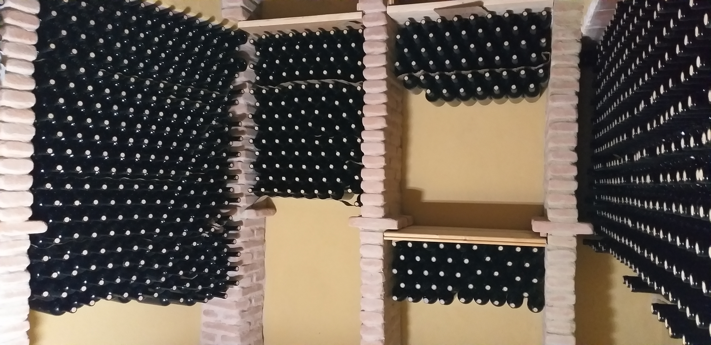
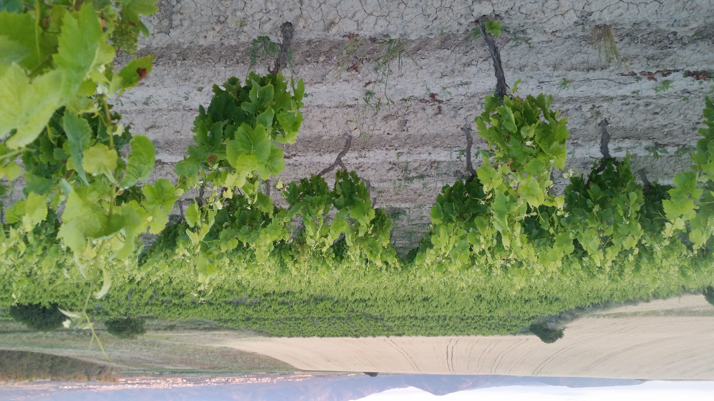
Agricoltura biologica dal 1993, vini naturali e biologici dal 1999, la più lunga produzione di vini biologici in Sardegna.
Scopri le EtichetteLa nostra storia, la nostra terra, la nostra visione del vino.
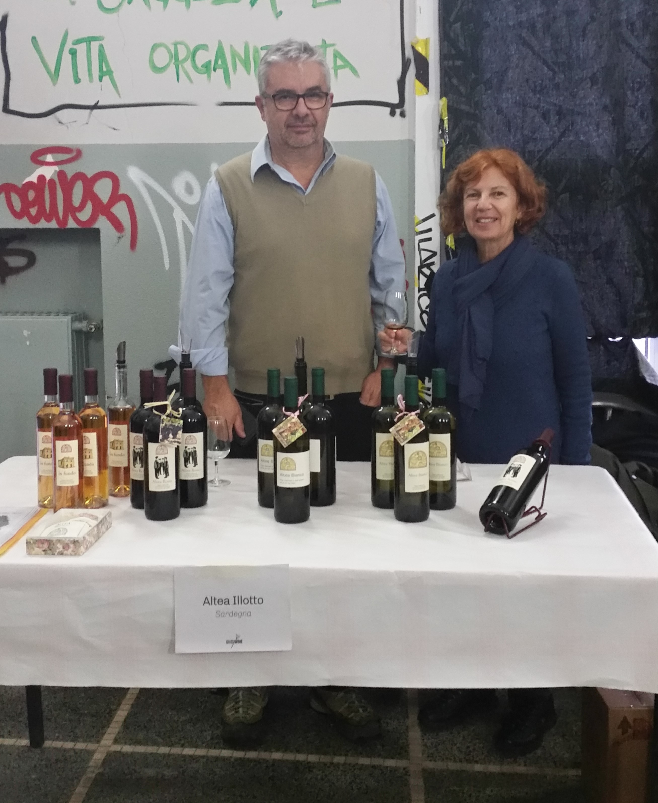
Il vino è come uno specchio. Riflette sia chi lo produce, che chi lo consuma. Questo pensano Maurizio Altea e Adele Illotto, che ritrovano se stessi e il loro territorio nei vini fortemente identitari, che essi producono.
Cinque ettari di vigneto ricadenti nella denominazione Sibiola IGT, la delimitazione di territorio più piccola in Sardegna, che comprende solo i terreni più vocati dei comuni di Serdiana e Soleminis, in provincia di Cagliari.
Vitigni autoctoni e tradizionali (Cannonau, Carignano, Monica, Muristellu, Girò, Barbera sardo per le rosse, Nuragus, Nasco, Vermentino, Moscato e Malvasia Sarda per le bianche) allevati principalmente ad alberello e Guyot Poussard (chiamato nella zona carriadroxia cun s'appicamantella), su terreni bianchi, argilloso marnosi, nelle basse colline di Serdiana.
La scelta di Maurizio(agronomo) e Adele (agronoma ed enologa) di attuare una viticoltura rispettosa dell'ambiente viene da lontano: infatti già dal 1993 tutta la loro azienda segue le pratiche della agricoltura biologica.
Nessun prodotto chimico di sintesi in nessuna fase della coltivazione. Per mantenere la fertilità del terreno si pratica il sovescio e l'inerbimento temporaneo, nessun apporto proveniente dall'esterno della propria azienda agricola.
Raccolta rigorosamente manuale in piccole cassette forate, con selezione dei grappoli, in modo che l'uva arrivi in cantina sana e integra.
In vinificazione fermentazioni spontanee (perchè convinti che anche i lieviti autoctoni naturali contribuiscano all'espressione del territorio), e solforosa a bassissime dosi (meno della metà di quella consentita dal disciplinare del vino biologico).
Nessun consulente esterno né nel vigneto, né in cantina.
Anche la vendita è gestita personalmente, rapporti diretti con chi ama i loro vini. Per ridurre l'impatto ambientale niente più brochure, ma solo comunicazioni digitali.
Maurizio e Adele ci tengono a precisare "i nostri vini sono assolutamente nostri dalla vigna alla bottiglia. La motivazione che ci ha portato a diventare vignaioli è stata la nostra passione per i vini (abbiamo una discreta esperienza come degustatori) e la volontà di produrre dei vini che esprimessero l'amore per il nostro territorio e il rispetto per l'ambiente"
Nei loro vini riconosciamo la volontà di resistere alla dilagante omologazione del gusto. Ricordiamo il particolarissimo Altea Bianco, la prima bottiglia nel 2000, da uve provenienti da un vitigno raro come il Nasco, con l'aggiunta di Vermentino e Nuragus, il corposo Altea Rosso, un armonioso corale di Cannonau, Carignano, Monica e Muristellu e dal 2013 il leggiadro Papilio a base Nuragus, ottenuto da un vigneto di quasi 60 anni. Infine, una anticpazione, dal 2017 sarà in vendita In fundo, un vino da meditazione a base di Moscato sardo, ottenuto con una vendemmia tardiva.
Vini assolutamente da assaggiare, ma soprattutto da bere.
I nostri vigneti a Serdiana, nel sud Sardegna.
Vinifichiamo esclusivamente le uve dei nostri vigneti. I nostri vigneti si trovano nelle basse colline di Serdiana, su terreni bianchi, argilloso marnosi. Ricadono nel territorio delimitato dall'IGT Sibiola, la delimitazione di territorio più piccola della Sardegna (che comprende i terreni più vocati del comune di Serdiana).
Noi abbiamo scelto di utilizzare per i nostri vini questa denominazione che mette meglio in evidenza il territorio rispetto alle DOC presenti in Sardegna, che comprendono regioni ben più vaste, con territori molto eterogenei.
Dal 1993 coltiviamo i nostri vigneti con i metodi dell'Agricoltura Biologica, che esclude l'utilizzo di prodotti chimici di sintesi.
Le campagne di Serdiana (CA) celebri per la loro vocazione alla coltivazione della vite ospitano i nostri vigneti, circondati da siepi d'assenzio e finocchio selvatico. Il comune di Serdiana a 20 km a Nord di Cagliari, a 171 mslm occupa la posizione più pianeggiante del Parteolla.
Attorno al paese, basse colline accolgono piante di mirto, lentischio, querce, ginepri e olivastri. Nella valle di S'Isca Manna è possibile trovare numerose piccole sorgenti. Nel suo territorio è presente uno stagno salato, "Su Staini Saliu", di grande interesse naturalistico, dove d'inverno sostano i fenicotteri rosa.
A pochi chilometri dal paese c'è la chiesetta romanica di Santa Maria di Sibiola. Eretta nella prima metà del secolo XII dai Benedettini, rappresenta un piccolo gioiello di architettura religiosa, situata in una piccola altura circondata da vigneti.
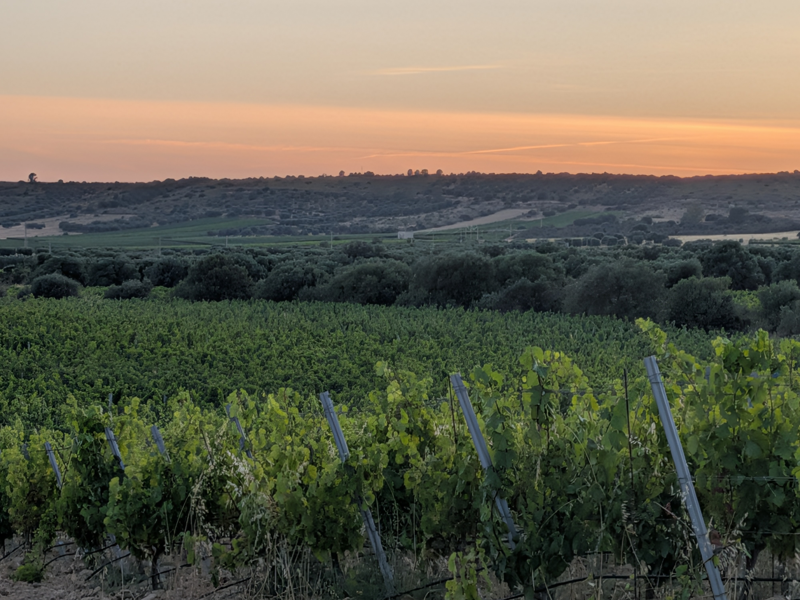
Le nostre etichette sono tutte espressioni autentiche del territorio sardo, ottenute con vitigni autoctoni e tradizionali.
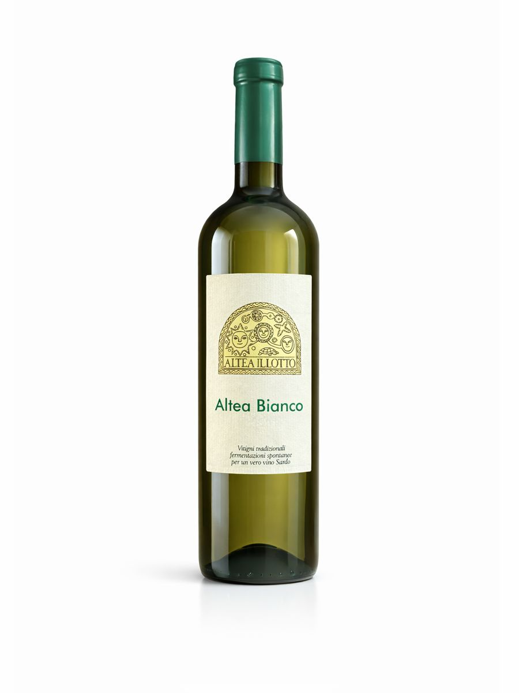
Nasco (95%) e Nuragus (5%). La prima bottiglia nel 2000, un vino unico da un vitigno raro. Sfumature oro, grande struttura, marino e sapido.
Vedi Scheda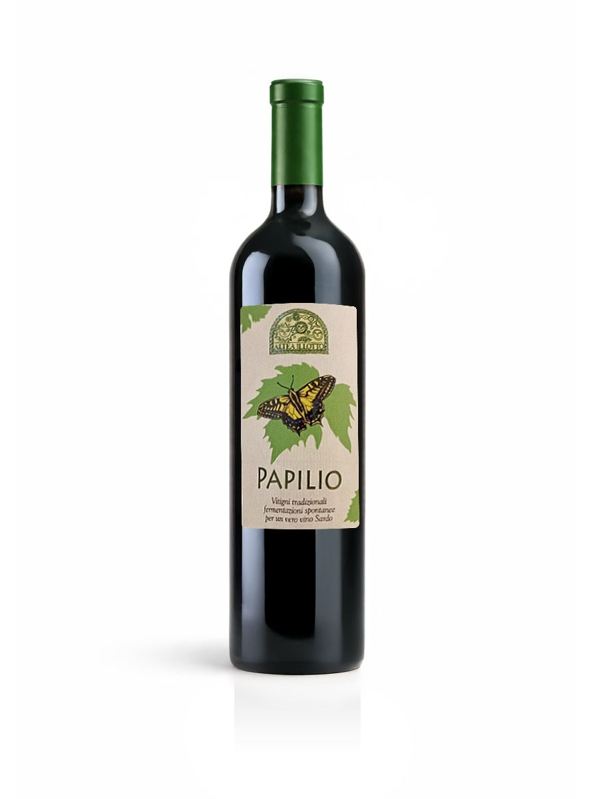
Nuragus (95%) e Nasco (5%) da un vigneto di oltre 60 anni. Giallo dorato, ricco di tannini, un bianco che sembra un rosso travestito.
Vedi Scheda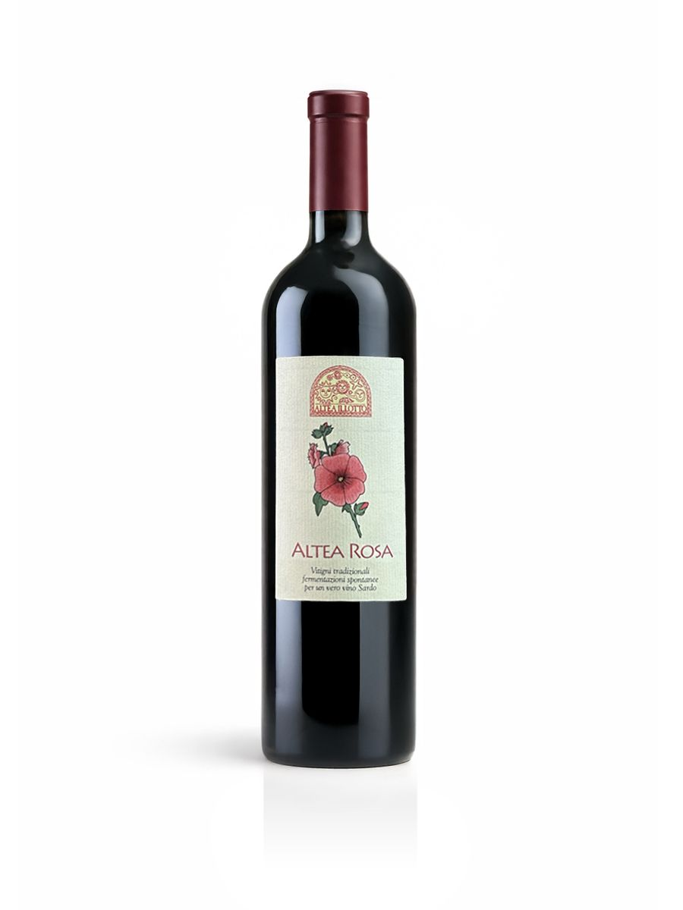
Carignano vinificato in bianco. Colore rosa intenso, sapore fruttato.
Vedi Scheda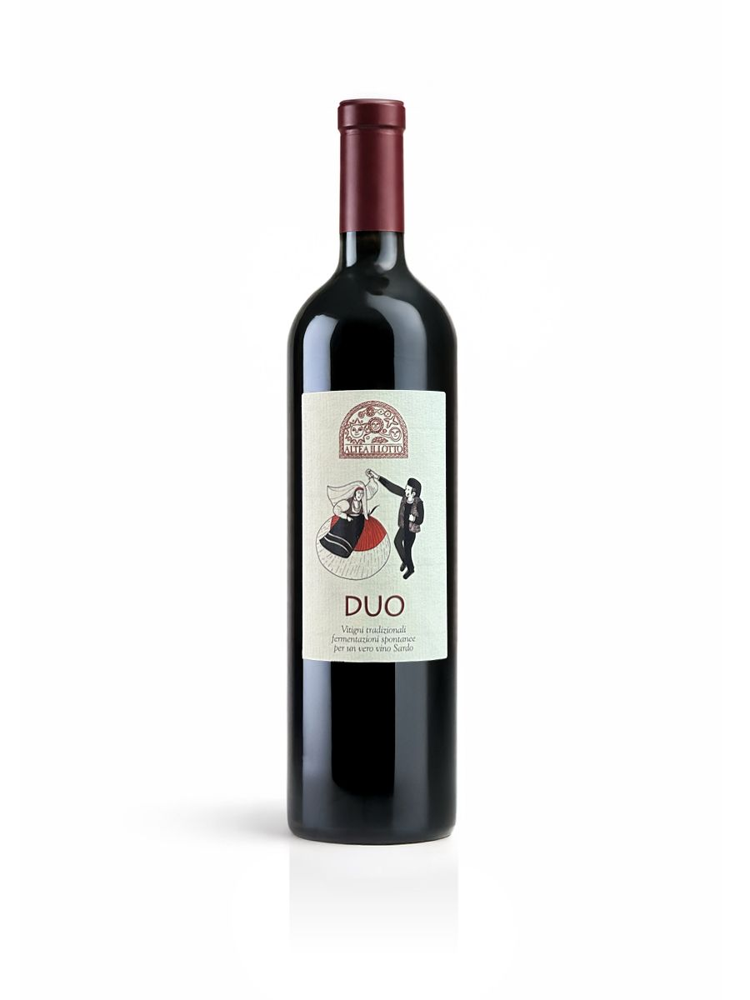
Monica e Barbera Sarda. Il nostro nuovo rosso, imbottigliato per la prima volta nel 2022. Già una grande personalità.
Vedi Scheda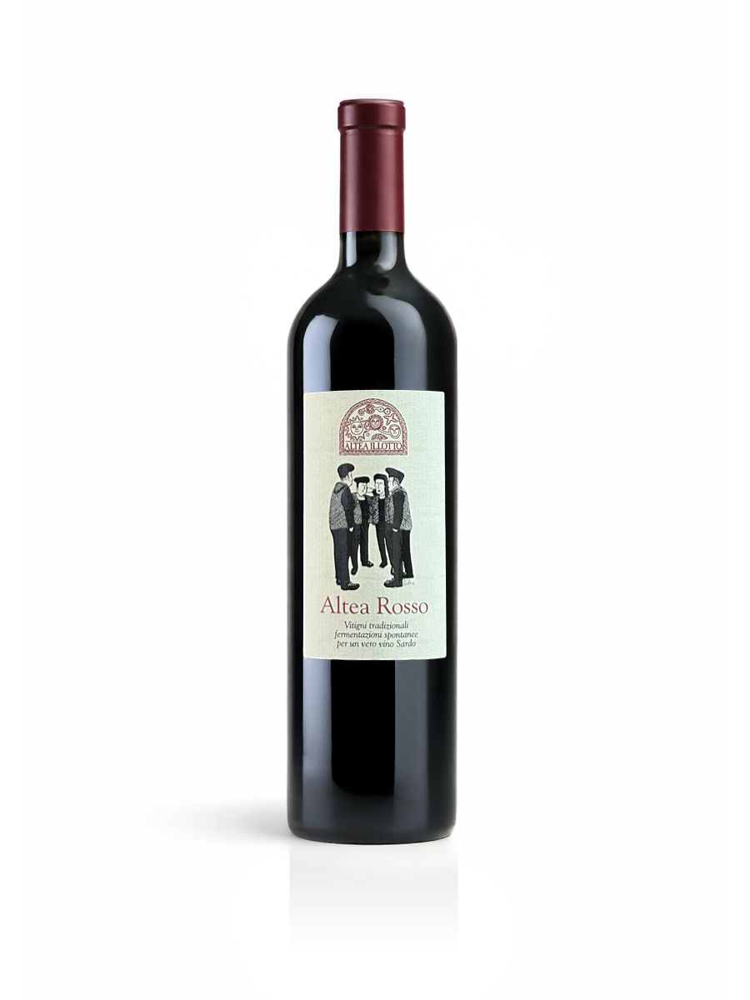
Cannonau, Carignano, Monica e Barbera Sarda. Corale di quattro vitigni, rosso rubino, morbido e di grande equilibrio.
Vedi Scheda
Vendemmia tardiva di Moscato. Giallo dorato luminoso, note di miele e albicocca. Dolcezza non invadente in perfetto equilibrio con la salinità.
Vedi Scheda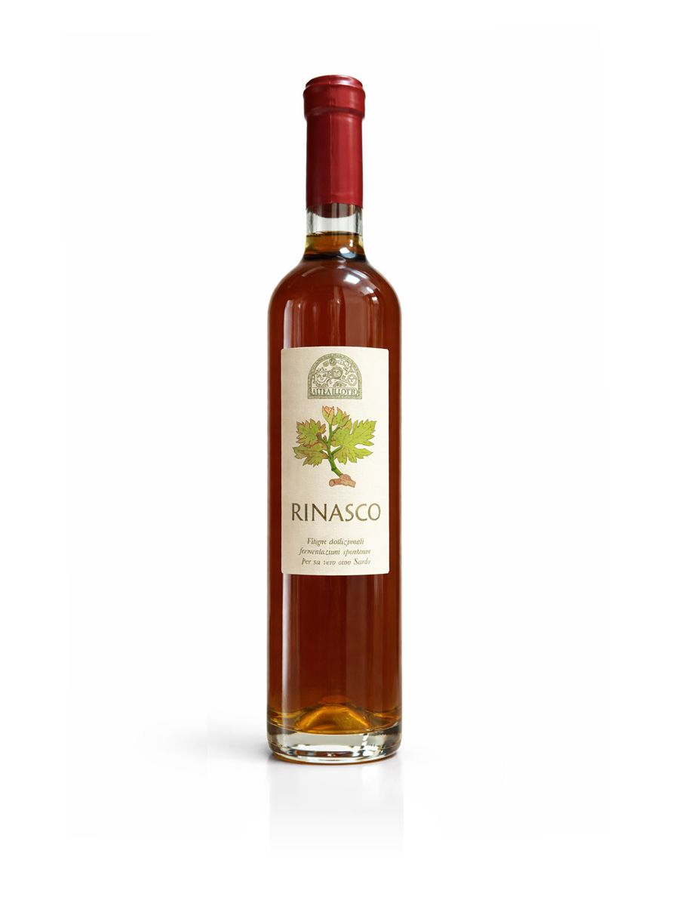
Vendemmia tardiva di Nasco. Appassimento sulla pianta, macerazione sulle bucce, affinamento in botte. Solo 500 bottiglie.
Vedi SchedaTutti i dati di ogni nostra annata, nel massimo della trasparenza.
Sfumature oro, di grande struttura, fruttato al naso il primo anno e poi ricco di sentori di muschio e macchia mediterranea. In bocca è lungo, sapido, marino.
| Uve | Nasco 95%, Nuragus 5% |
| Bottiglie prodotte | 1800 |
| Vendemmia | Metà agosto |
| Resa | 30 q/ha |
| Lieviti | Naturali (fermentazione spontanea) |
| Macerazione | 24 ore |
| Affinamento | 12 mesi sui lieviti in piccole vasche in acciaio |
| Imbottigliamento | Giugno 2023 |
| Gradi alcolici | 14,50% vol |
| SO₂ totale | <10 mg/l — Senza solfiti aggiunti |
Giallo paglierino intenso tendente al dorato, molto particolare per la sua ricchezza in tannini: pare quasi un rosso travestito da bianco. Leggermente petillant.
| Uve | Nuragus 95%, Nasco 5% |
| Bottiglie prodotte | 450 |
| Vendemmia | Fine agosto |
| Resa | 20 q/ha |
| Lieviti | Naturali (fermentazione spontanea) |
| Macerazione | 24 ore |
| Affinamento | In botte di ceramica |
| Imbottigliamento | Aprile 2022 |
| Gradi alcolici | 13,50% vol |
| Estratto secco | 28 g/l |
| SO₂ totale | <10 mg/l — Senza solfiti aggiunti |
Un rosato non comune, da pressatura soffice. Profumi primari dell'uva senza forzature, beva profonda e grande persistenza.
| Uve | Carignano |
| Bottiglie prodotte | 420 |
| Vendemmia | Prima settimana di settembre |
| Resa | 30 ql/ha |
| Lieviti | Naturali (fermentazione spontanea) |
| Macerazione | Breve contatto con le bucce in pressa |
| Affinamento | 9 mesi in piccola vasca d'acciaio |
| Imbottigliamento | Maggio 2024 |
| Gradi alcolici | 13,5% vol |
| SO₂ totale | 20 mg/l |
Corale di quattro vitigni che si esaltano a vicenda. Rosso rubino con riflessi granati, profumo intenso di frutti di bosco e confetture, morbido e di grande equilibrio.
| Uve | Cannonau, Monica, Carignano, Barbera Sardo |
| Bottiglie prodotte | 3000 |
| Vendemmia | Prima settimana di settembre |
| Resa | 40 q/ha |
| Lieviti | Naturali (fermentazione spontanea) |
| Macerazione | 8 giorni |
| Affinamento | 14 mesi in piccole vasche d'acciaio sui lieviti + 2 mesi in bottiglia |
| Imbottigliamento | Giugno 2022 |
| Gradi alcolici | 14,50% vol |
| Estratto secco | 35,5 g/l |
| SO₂ totale | 30 mg/l |
Il nostro nuovo vino rosso, imbottigliato per la prima volta a fine maggio 2022. Monica e Barbera Sarda da un unico appezzamento in località Su Pranu. Solo 500 bottiglie.
| Uve | Monica e Barbera Sarda |
| Bottiglie prodotte | 500 |
| Vendemmia | Prima settimana di settembre |
| Resa | 42 ql/ha |
| Lieviti | Naturali (fermentazione spontanea) |
| Macerazione | 9 giorni |
| Affinamento | In piccola vasca d'acciaio |
| Imbottigliamento | Maggio 2023 |
| Gradi alcolici | 14,00% vol |
| Estratto secco | 35 g/l |
| SO₂ totale | 29 mg/l |
Vendemmia tardiva di Moscato, imbottigliato per la prima volta ad aprile 2017. Di un luminoso giallo dorato, con note decise di miele e frutta secca, in particolare albicocca. Grande eleganza, dolcezza in perfetto equilibrio con la salinità.
| Uve | Moscato (vendemmia tardiva) |
| Vendemmia | Tardiva, raccolta a mano in cassette forate |
| Lieviti | Naturali (fermentazione spontanea) |
| Affinamento | In piccola vasca d'acciaio |
| Imbottigliamento | Aprile 2017 |
| Gradi alcolici | Vino da meditazione |
| Note | Nell'etichetta un disegno di Michele Cubadda della Chiesetta di Santa Maria di Sibiola |
Vendemmia tardiva di uve Nasco, lasciate leggermente appassire sulla pianta, raccolte a mano, macerate per una settimana sulle bucce e affinate in botte per un anno. Solo 500 bottiglie.
| Uve | Nasco (vendemmia tardiva) |
| Bottiglie prodotte | 500 |
| Vendemmia | Tardiva, raccolta a mano in piccole cassette forate |
| Lieviti | Naturali (fermentazione spontanea) |
| Macerazione | Una settimana sulle bucce |
| Affinamento | Un anno in botte |
| Imbottigliamento | Settembre 2022 |
I nostri vini possono essere acquistati presso noi direttamenete, rivenditori online e in diversi locali sia in Sardegna che in continente.
Scopri e ordina i nostri vini su Bevisardo, il portale dedicato alle cantine artigianali sarde.
Vai alla sezione →I nostri vini sono proposti in ristoranti, enoteche e vinerie.
Vai alla sezione →Scrivici per ordinare, organizzare una visita o ricevere informazioni.
Vai alla sezione →Scorci di vita in vigna e in cantina, tra Serdiana e Sibiola.


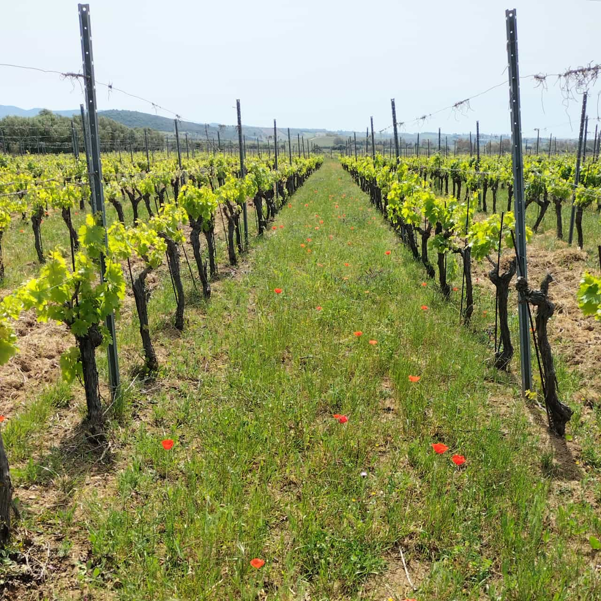
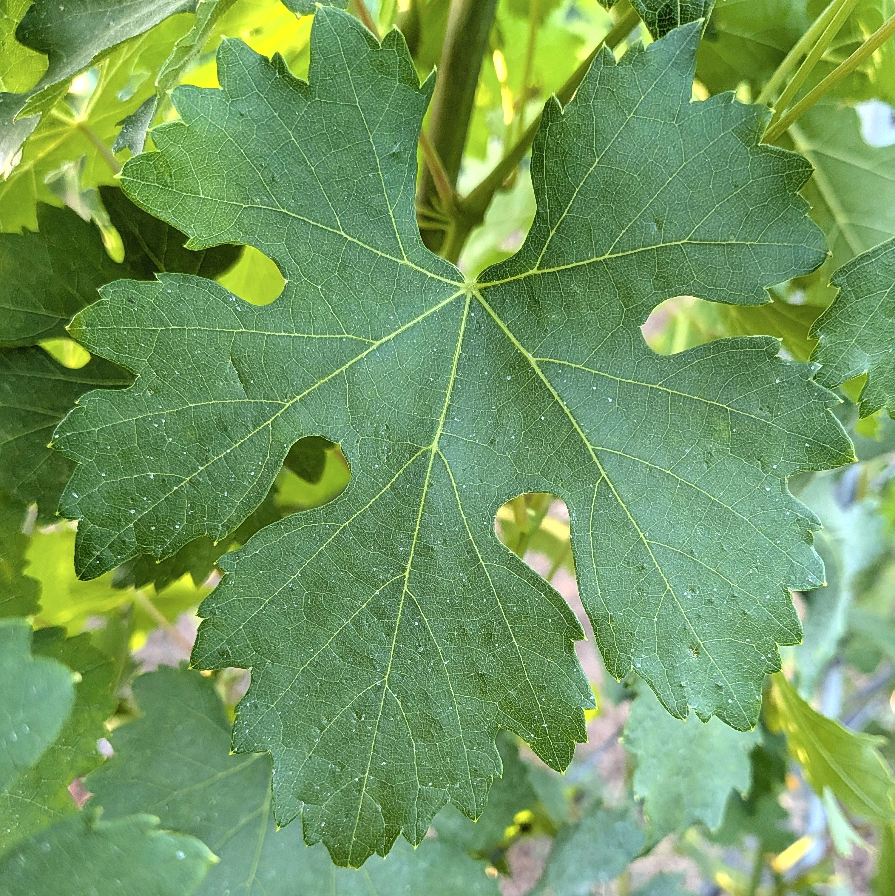
Preferiamo il contatto diretto per raccontarvi i nostri vini. Scriveteci o passate a trovarci.